3 Special Functions
| (require math/special-functions) | package： math-lib |
The term “special function” has no formal definition. However, for the purposes of the math library, a special function is one that is not elementary.
Many return exact values for certain exact arguments.
When applied to exact arguments outside their domains, they raise an exn:fail:contract instead of returning +nan.0.
Currently, math/special-functions does not export any functions that accept or return complex numbers. Mathematically, some of them could return complex numbers given real numbers, such hurwitz-zeta when given a negative second argument. In these cases, they raise an exn:fail:contract (for an exact argument) or return +nan.0 (for an inexact argument).
Most real functions have more than one type, but they are documented as having only one. The documented type is the most general type, which is used to generate a contract for uses in untyped code. Use :print-type to see all of a function’s types.
Because lambert : Zero -> Zero, Typed Racket proves during typechecking that one of its exact cases is (lambert 0) = 0.
Because the theorem lambert : Flonum -> Flonum is stated as a type and proved by typechecking, Typed Racket’s optimizer can transform the expressions around its use into bare-metal floating-point operations. For example, (+ 2.0 (lambert 3.0)) is transformed into (unsafe-fl+ 2.0 (lambert 3.0)).
The most general type Real -> (U Zero Flonum) is used to generate lambert’s contract when it is used in untyped code. Except for this discussion, this the only type documented for lambert.
3.1 Real Functions
函数
(gamma x) → (U Positive-Integer Flonum)
x : Real
> (plot (list (function (λ (x) (gamma (+ 1 x))) 0 4.5 #:label "gamma(x+1)") (function (λ (x) (factorial (truncate x))) #:color 2 #:label "factorial(floor(x))"))) 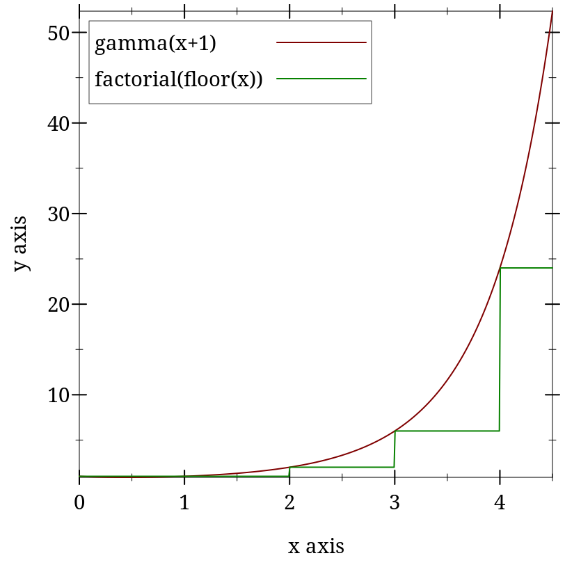
> (plot (function gamma -2.5 5.5) #:y-min -50 #:y-max 50) 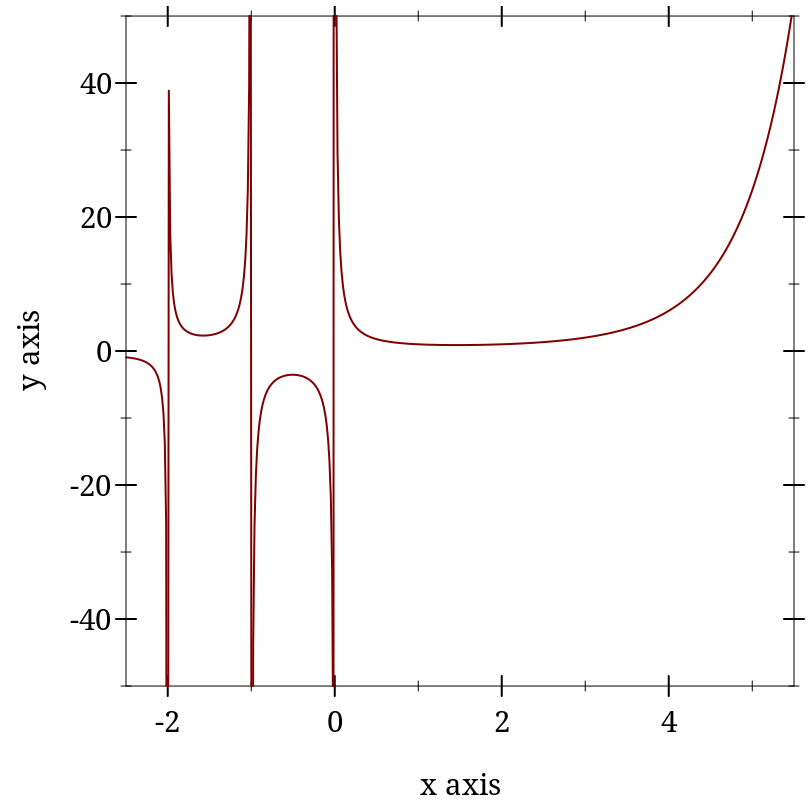
> (gamma 5) 24
> (gamma 5.0) 24.0
> (factorial 4) 24
> (gamma -1) gamma: contract violation
expected: Real, not Zero or Negative-Integer
given: -1
> (gamma -1.0) +nan.0
> (gamma 0.0) +inf.0
> (gamma -0.0) -inf.0
> (gamma 172.0) +inf.0
> (bf (gamma 172)) (bf "1.241018070217667823424840524103103992618e309")
Error is no more than 10 ulps everywhere that has been tested, and is usually no more than 4 ulps.
> (plot (list (function log-gamma -5.5 10.5 #:label "log-gamma(x)") (function (λ (x) (log (abs (gamma x)))) #:color 2 #:style 'long-dash #:width 2 #:label "log(abs(gamma(x)))"))) 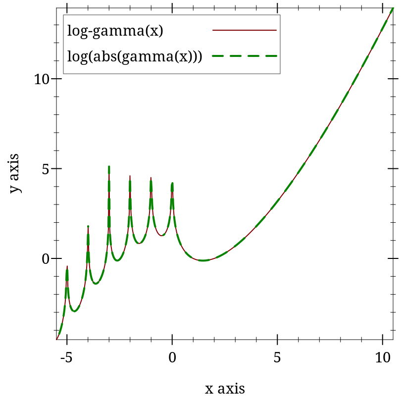
> (log-gamma 5) 3.1780538303479458
> (log (abs (gamma 5))) 3.1780538303479458
> (log-gamma -1) log-gamma: contract violation
expected: Real, not Zero or Negative-Integer
given: -1
> (log-gamma -1.0) +inf.0
> (log-gamma 0.0) +inf.0
> (log (abs (gamma 172.0))) +inf.0
> (log-gamma 172.0) 711.71472580229
Error is no more than 11 ulps everywhere that has been tested, and is usually no more than 2 ulps. Error reaches its maximum near negative roots.
> (plot (function psi0 -2.5 4.5) #:y-min -5 #:y-max 5) 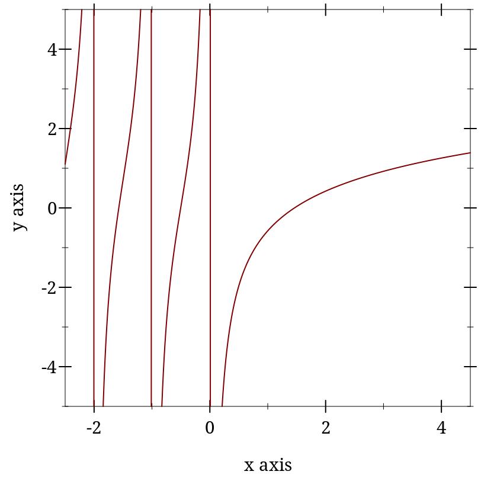
> (psi0 0) psi0: contract violation
expected: Real, not Zero or Negative-Integer
given: 0
> (psi0 1) -0.5772156649015329
> (- gamma.0) -0.5772156649015329
Except near negative roots, maximum observed error is 2 ulps, but is usually no more than 1.
Near negative roots, which occur singly between each pair of negative integers, psi0 exhibits catastrophic cancellation from using the reflection formula, meaning that relative error is effectively unbounded. However, maximum observed absolute-error is (* 5 epsilon.0). This is the best we can do for now, because there are currently no reasonably fast algorithms for computing psi0 near negative roots with low relative error.
If you need low relative error near negative roots, use bfpsi0.
> (plot (for/list ([m (in-range 4)]) (function (λ (x) (psi m x)) -2.5 2.5 #:color m #:style m #:label (format "psi~a(x)" m))) #:y-min -300 #:y-max 300 #:legend-anchor 'top-right) 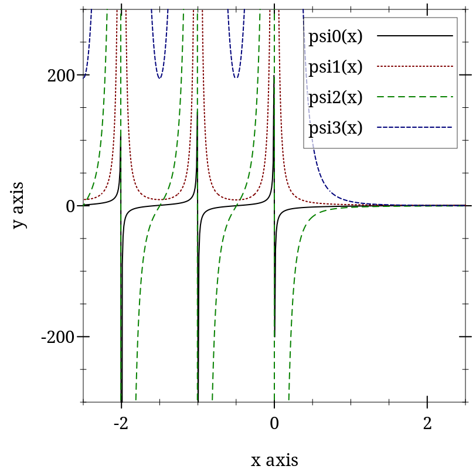
> (psi -1 2.3) psi: contract violation
expected: Natural
given: -1
argument position: 1st
other arguments...:
2.3
> (psi 0 -1.1) 10.154163959143848
> (psi0 -1.1) 10.154163959143848
From spot checks with m > 0, error appears to be as with psi0: very low except near negative roots. Near negative roots, relative error is apparently unbounded, but absolute error is low.
> (plot (list (function erf -2 2 #:label "erf(x)") (function erfc #:color 2 #:label "erfc(x)"))) 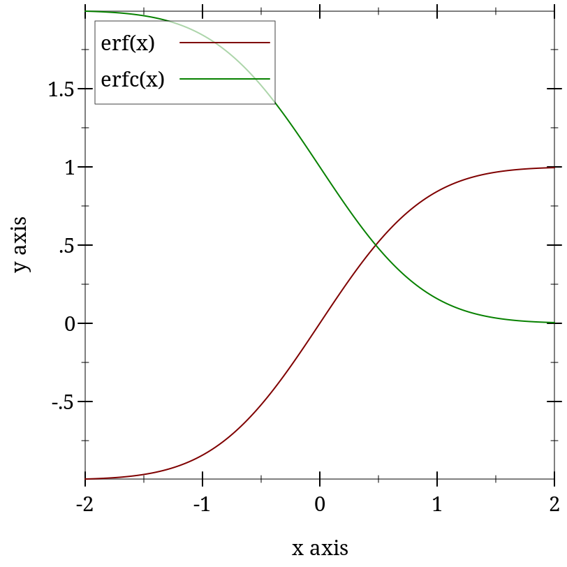
> (erf 0) 0
> (erf 1) 0.8427007929497148
> (- 1 (erfc 1)) 0.8427007929497148
> (erf -1) -0.8427007929497149
> (- (erfc 1) 1) -0.8427007929497148
Mathematically, erfc(x) = 1 - erf(x), but having separate implementations can help maintain accuracy. To compute an expression containing erf, use erf for x near 0.0. For positive x away from 0.0, manipulate (- 1.0 (erfc x)) and its surrounding expressions to avoid the subtraction:
> (define x 5.2) > (bf-precision 128) > (define log-erf-x (bigfloat->rational (bflog (bferf (bf x))))) > (flulp-error (log (erf x)) log-erf-x) 873944876280.6095
> (flulp-error (log (- 1.0 (erfc x))) log-erf-x) 873944876280.6095
> (flulp-error (fllog1p (- (erfc x))) log-erf-x) 1.609486456125461
For erf, error is no greater than 2 ulps everywhere that has been tested, and is almost always no greater than 1. For erfc, observed error is no greater than 4 ulps, and is usually no greater than 2.
This function has two real branches. The lambert variant computes the upper branch, and is defined for x >= (- (exp -1)). The lambert- variant computes the lower branch, and is defined for negative x >= (- (exp -1)). The only exact case is (lambert 0) = 0.
> (plot (list (function lambert (- (exp -1)) 1) (function lambert- (- (exp -1)) -min.0 #:color 2)) #:y-min -4) 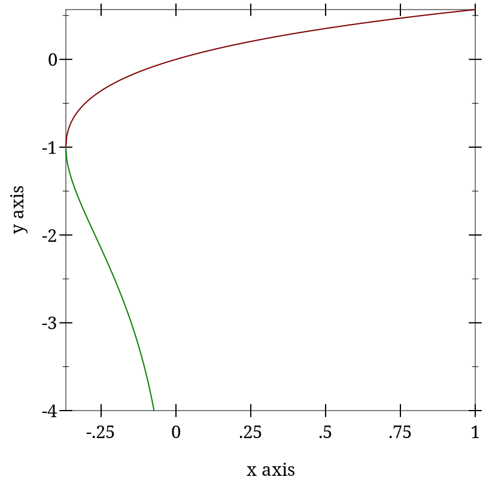
> (lambert 0) 0
> (lambert (- (exp -1))) -1.0
> (lambert -1/2) lambert: contract violation
expected: Real >= (- (exp -1))
given: -1/2
> (lambert- 0) lambert-: contract violation
expected: Negative-Real >= (- (exp -1))
given: 0
> (define y0 (lambert -0.1)) > (define y1 (lambert- -0.1)) > y0 -0.11183255915896297
> y1 -3.577152063957297
> (* y0 (exp y0)) -0.1
> (* y1 (exp y1)) -0.10000000000000002
The Lambert W function often appears in solutions to equations that contain n log(n), such as those that describe the running time of divide-and-conquer algorithms.
> (define (time->sort-size t) (exact-floor (exp (lambert (/ t c))))) > (time->sort-size 100) 2548516
> (define lst2 (build-list 2548516 values)) > (time (sort lst2 <)) cpu time: 80 real time: 93 gc time: 0
For both branches, error is no more than 2 ulps everywhere tested.
> (plot (function zeta -2 10) #:y-min -4 #:y-max 4) 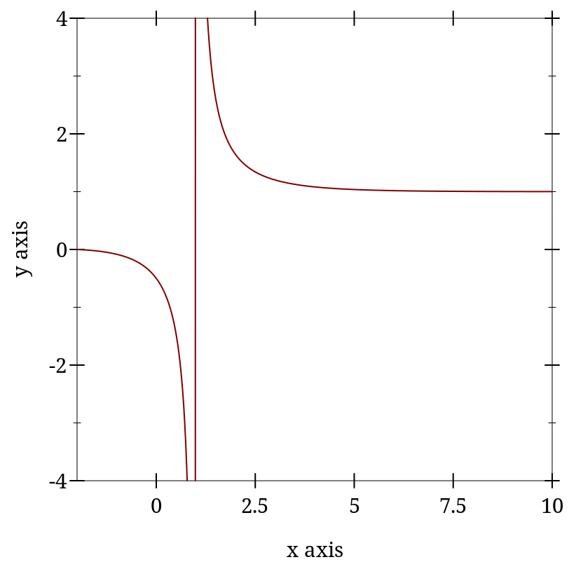
> (plot (function zeta -14 -2)) 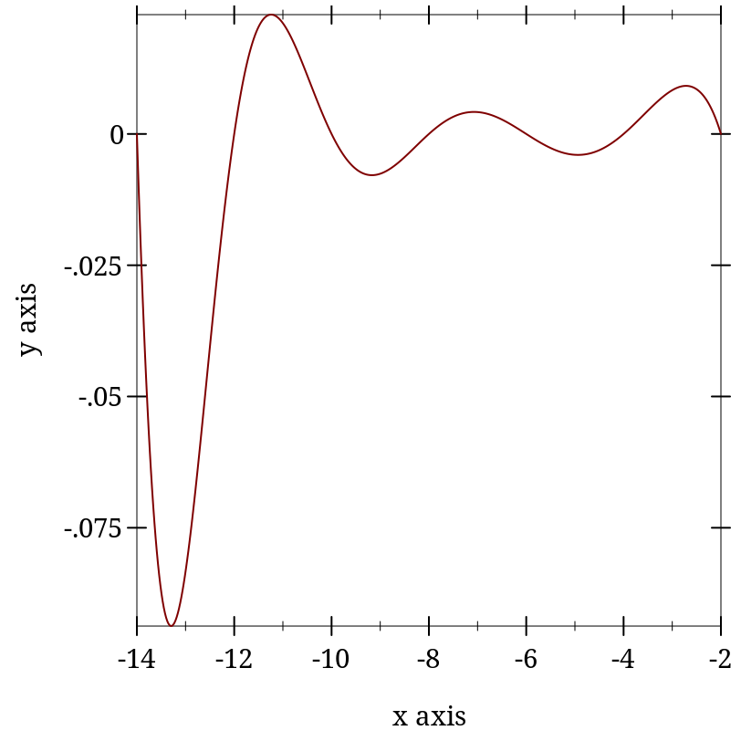
> (zeta 0) -1/2
> (zeta 1) zeta: contract violation
expected: Real, not One
given: 1
> (zeta 1.0) -inf.0
> (zeta -1) -1/12
> (define num 1000000)
> (define num-coprime (for/sum ([_ (in-range num)]) (if (coprime? (random-bits 16) (random-bits 16)) 1 0))) > (fl (/ num-coprime num)) 0.607901
> (/ 1 (zeta 2)) 0.6079271018540264
When s is an odd, negative exact integer, (zeta s) computes (bernoulli (- 1 s)), which can be rather slow.
Maximum observed error is 6 ulps, but is usually 3 or less.
> (plot (function eta -10 6)) 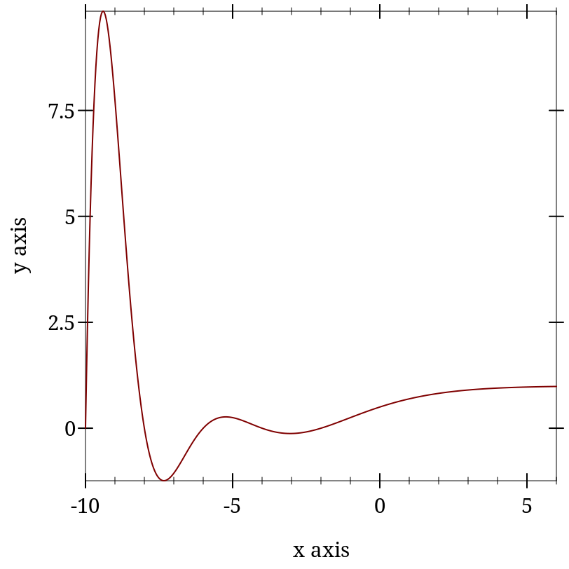
> (eta 0) 1/2
> (eta -1) 1/4
> (eta 1) 0.6931471805599453
> (log 2) 0.6931471805599453
When s is an odd, negative exact integer, (eta s) computes (bernoulli (- 1 s)), which can be rather slow.
Maximum observed error is 11 ulps, but is usually 4 or less.
函数
(hurwitz-zeta s q) → Real
s : Real q : Real
> (plot (list (function zeta 1.5 5) (function (λ (s) (hurwitz-zeta s 1)) #:color 2 #:style 'long-dash #:width 2))) 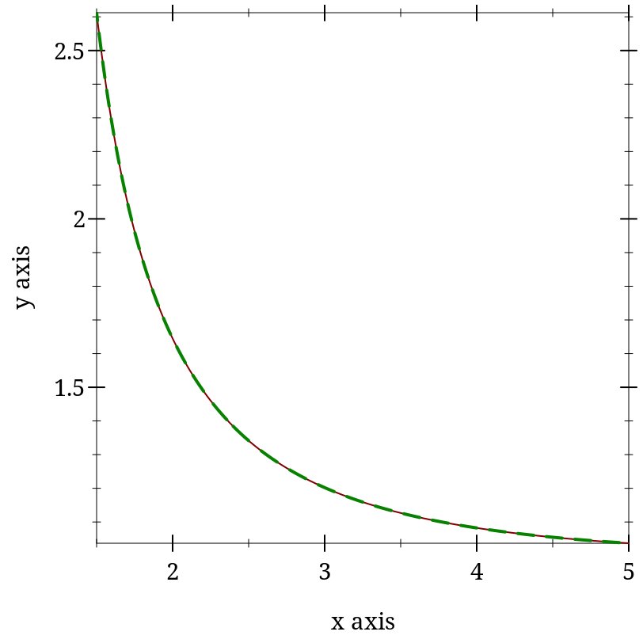
> (hurwitz-zeta 1 1) hurwitz-zeta: contract violation
expected: Real > 1
given: 1
argument position: 1st
other arguments...:
1
> (hurwitz-zeta 1.0 1.0) +inf.0
> (hurwitz-zeta 2 1/4) 17.197329154507113
> (+ (sqr pi) (* 8 catalan.0)) 17.19732915450711
While hurwitz-zeta currently raises an exception for s < 1, it may in the future return real values.
Maximum observed error is 6 ulps, but is usually 2 or less.
> (plot3d (contour-intervals3d beta 0.25 2 0.25 2) #:angle 250) 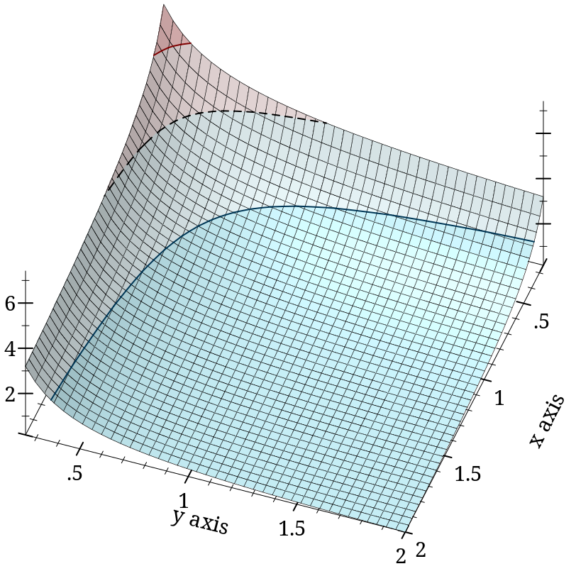
> (beta 0 0) beta: contract violation
expected: positive Real
given: 0
argument position: 1st
other arguments...:
0
> (beta 1 5) 1/5
> (beta 1.0 5.0) 0.2
If you are doing statistical work, you should probably use gamma-dist instead, which is defined in terms of gamma-inc and is more flexible (e.g. it allows negative x).
> (list (plot3d (contour-intervals3d gamma-inc 0.1 4.5 0 10) #:x-label "k" #:y-label "x" #:width 210 #:height 210) (plot3d (contour-intervals3d (λ (k x) (gamma-inc k x #t)) 0.1 4.5 0 10) #:x-label "k" #:y-label "x" #:width 210 #:height 210)) '(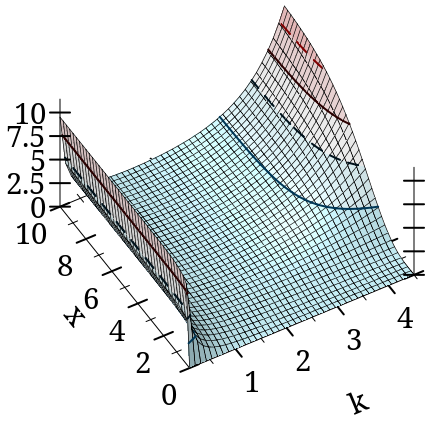 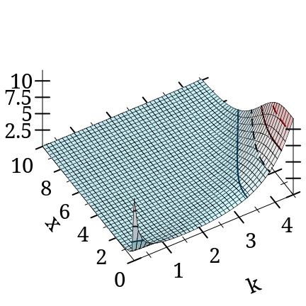)
> (plot3d (contour-intervals3d (λ (k x) (gamma-inc k x #f #t)) 0.1 20 0 20) #:x-label "k" #:y-label "x") 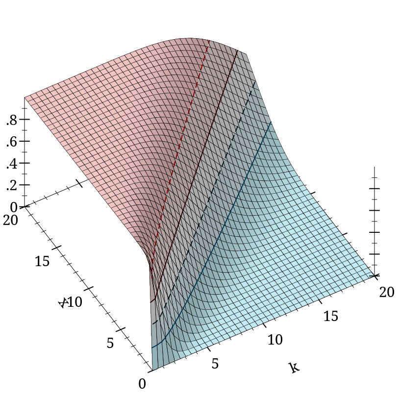
> (gamma 4.0) 6.0
> (+ (gamma-inc 4.0 0.5 #f) (gamma-inc 4.0 0.5 #t)) 6.0
> (gamma-inc 4.0 +inf.0) 6.0
> (/ (gamma-inc 200.0 50.0 #f) (gamma 200.0)) +nan.0
> (gamma-inc 200.0 50.0 #f #t) 2.0247590148473565e-57
> (gamma-inc 0 5.0) gamma-inc: contract violation
expected: Positive-Real
given: 0
argument position: 1st
other arguments...:
5.0
> (gamma-inc 0.0 5.0) +inf.0
函数
(log-gamma-inc k x [upper? regularized?]) → Flonum
k : Real x : Real upper? : Any = #f regularized? : Any = #f
If you are doing statistical work, you should probably use beta-dist instead, which is defined in terms of beta-inc and is more flexible (e.g. it allows negative x).
Similar identities should hold as with gamma-inc.
> (plot3d (isosurfaces3d (λ (a b x) (beta-inc a b x #f #t)) 0.1 2.5 0.1 2.5 0 1 #:label "beta(a,b,x)") #:x-label "a" #:y-label "b" #:z-label "x" #:angle 20 #:altitude 20 #:legend-anchor 'top) 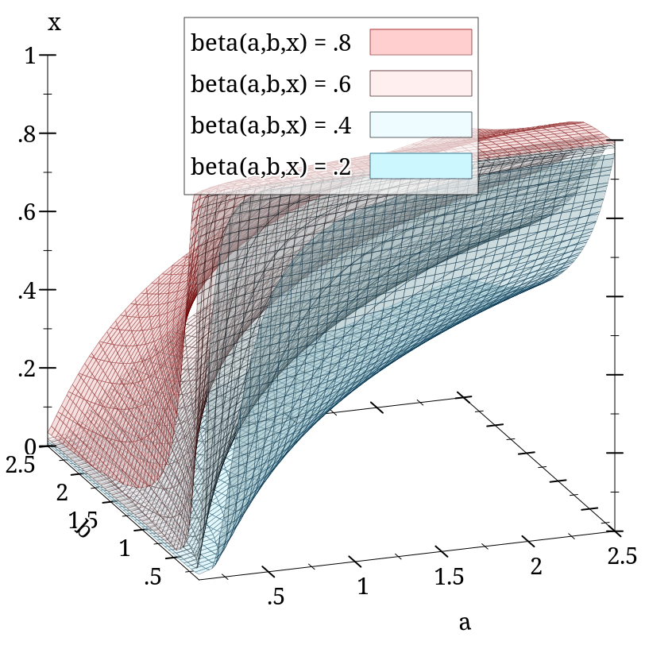
函数
(log-beta-inc a b x [upper? regularized?]) → Flonum
a : Real b : Real x : Real upper? : Any = #f regularized? : Any = #f
While most areas of this function have error less than 5e-15, when a and b have very dissimilar magnitudes (e.g. 1e-16 and 1e+16), it exhibits catastrophic cancellation. We are working on it.
3.2 Flonum Functions
函数
(fllog-gamma x) → Flonum
x : Flonum
函数
(fllambert- x) → Flonum
x : Flonum
函数
(flhurwitz-zeta s q) → Flonum
s : Flonum q : Flonum
函数
(fllog-beta x y) → Flonum
x : Flonum y : Flonum
函数
(flgamma-inc k x upper? regularized?) → Flonum
k : Flonum x : Flonum upper? : Any regularized? : Any
函数
(fllog-gamma-inc k x upper? regularized?) → Flonum
k : Flonum x : Flonum upper? : Any regularized? : Any
函数
(flbeta-inc a b x upper? regularized?) → Flonum
a : Flonum b : Flonum x : Flonum upper? : Any regularized? : Any
函数
(fllog-beta-inc a b x upper? regularized?) → Flonum
a : Flonum b : Flonum x : Flonum upper? : Any regularized? : Any